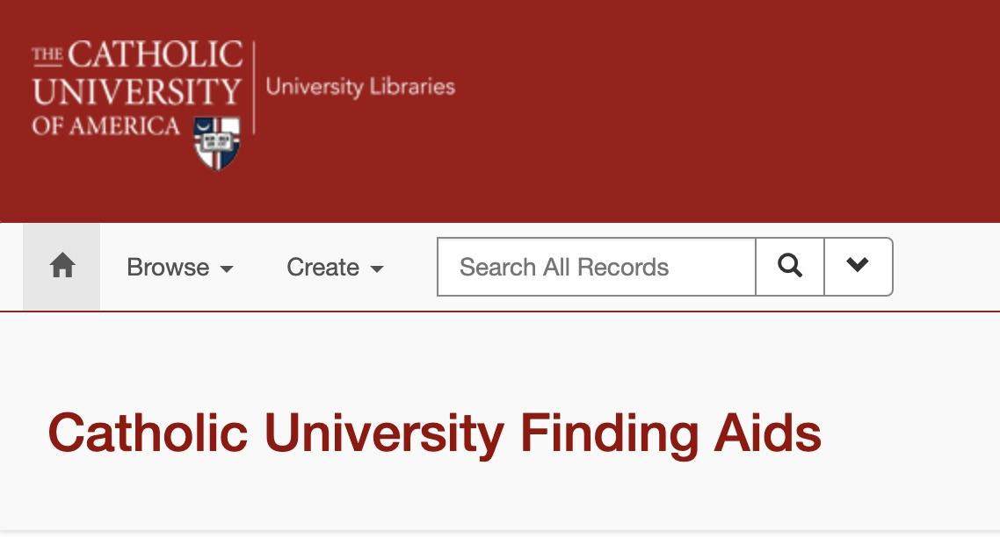
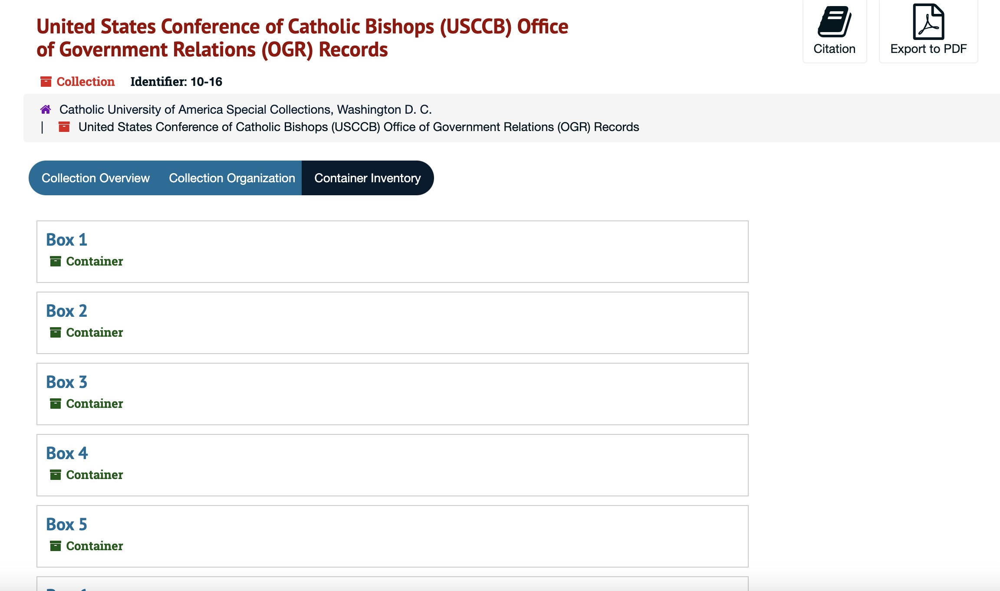
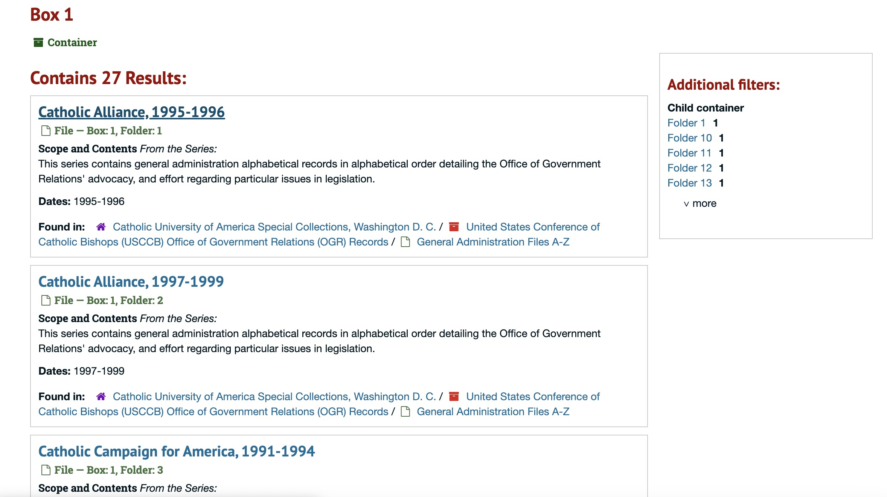

When beginning our discussion about this group project, we started asking if any of us were currently working in an environment that was using an information management system. As Laura and Paul are not currently working in an information center environment, it was quite fortunate that Abigail is! Abigail currently works for the Archives of Catholic University of America's Library.
According to the CUA Libraries website, the mission of the library is, “to support and enrich the instructional, research, and service programs of the University. . . In recognition of the University's position as a Catholic institution of higher education, the Library is also responsible for sharing resources and services with both the Catholic Church and the scholarly community.”
In Abigail's role as a Graduate Library Preprofessional, she processes incoming materials to be added to the archive's collection. As part of this process, her responsibilities include registering relevant metadata about the documents and resources to populate what becomes the associated finding aids. These finding aids get posted online for anyone to view and are frequently used by patrons to conduct research as well as by the staff. Supporting research represents a core responsibility in support of the libraries' mission, as her work helps make the sharing of the archives materials and relevant Catholic records available to both the Church and scholarly communities.
In assignment #2 for this course, we did a system evaluation and usability test for the archives of the CUA student newspaper, The Tower. This is part of the CUA libraries' archives digital collection, and uses the same patron facing system, which is accessible via the Islandora platform. We all experienced similar frustrations with The Tower's patron-facing online system: long load times with seemingly dead scans; limited system status display; lack of keyword or subject search options. Abigail emphasized that the patron-facing platform will soon migrate from the current system, islandora, to the JSTOR system. As the patron facing platform will soon change, an in-depth evaluation of the patron facing end is currently not helpful. It would, however, be interesting to follow up and evaluate the functionality of the system once the migration is complete.
Nonetheless, users will immediately find considerable differences between the information available to patrons searching The Tower archives vs the information available to patrons searching other areas of the libraries' archives. The principal reason for the differences in the usability and searchability of information on The Tower Archives vs the wider libraries' archives has to do with the level of granularity of metadata available. This level of metadata is central to Abigail's role with the Library Archives.
As a group, we decided to focus on the back end of this information system: the metadata processing system that Abigail uses in her daily work to create finding aids. The CUA libraries' archives use ArchivesSpace as their metadata management platform.
The ArchivesSpace platform is an open-source, web-based application designed by archivists for use in archives to support the full range of administrative tasks surrounding archival documents, from the acquisition, description, and arrangement of materials, through the management of access of records and the generation of administrative reports (Mission and Guiding Principles). ArchivesSpace also organizes a membership support structure that includes an impressive cohort of professional and academic archive organizations, including the Catholic University of America's libraries. As the platform is open-source, there are a number of user-generated extensions and add-ons designed to address the specific needs of different archives, or to simplify different aspects of archival work.
For this project, our team has decided to imagine that the CUA libraries' archives are our client, and we will evaluate their current use of the ArchivesSpace platform to make recommendations on how to better support their use of the system. Our objectives are to make their jobs of developing the metadata for their collections easier. In order to achieve our goals, we focused on several aspects of what we have learned about system evaluation through this class. We considered elements of Nielsen's Heuristics in our evaluation, and also relied heavily on what was essentially a usability test of the back-end ArchivesSpace metadata: Abigail demonstrated different elements of the typical tasks she conducts within the ArchivesSpace system. Laura and Paul observed the basic inputs and outputs required for and created through the use of the system, and asked follow-up questions. We took notes on elements of the platform that were unclear or confusing, or elements of the interface which made completion of necessary tasks indirect or challenging.
We also looked at the wider workflow involved with this information, specifically a rather frustrating process in which Abigail communicates in writing with patrons requesting access to specific documents or collections. Based on our observations, we have chosen to focus on simplifying the input system and patron request process, and clarifying some of the confusing prompts within the system.
We are familiar with poking around The Tower and seeing how much better the finding aids are in comparison. So, on the patron-end, the ArchivesSpace platform allows for a much more in depth and developed metadata experience. It was a pleasant surprise to see how easy ArchivesSpace made navigating the Special Collections system, and overall allowed for much more ease of exploration.
 Otherwise, the system WORKS! Abigail is adding valuable metadata which makes the collections she processes more searchable. Creating a better metadata standard and an easier interface with researchers requesting items allows us to improve the CUA Archives ability to fulfil their mission of maintaining knowledge and becoming a space for researchers.
For our recommendations we will be focusing on these 3 frustrations because they involve ArchiesSpace and have solutions provided by the open source community. Additionally, when Paul and Laura were exploring the specific Special Collections Finding Aids the system as a whole is a very successful experience for patrons. So the biggest room for improvement is within the back end data entry and the request system challenges.
Through our consideration of the Archives of Catholic University of America's use of ArchivesSpace as a metadata platform, Nielsen's heuristics have guided us to an evaluation which determines that the ArchivesSpace platform is generally quite effective, adaptable, and clear for the back-end users of the system. Through our rather extensive usability test, guided by Abigail's extensive use of the platform in her job duties, we have identified a few basic elements of the ArchivesSpace application which could be improved—notably the fact that employees gaining access to the staff interface should automatically be granted access to the information in the help icons, and the long, horizontal scrolling interface on the rapid data entry menu tend to impede smooth, simple addition of metadata.
Our strongest recommendations to the CUA libraries' archives have been developed through a broader consideration of the workflow process. ArchivesSpace as a metadata platform demonstrates impressive adaptability and effectiveness from an open source product. We think that the implementation of an updated communication system that could guide potential archive patrons toward efficient and direct communication about the resources they seek and their scheduling and communication preferences, like those provided by our example Google Form document request, could greatly improve the workflow efficiency of archives employees, and simplify record keeping and the fulfillment of patron requests. We also recommend that the archives' administrative management team consider familiarizing themselves with some of the open source user generated solutions that have been produced by the ArchivesSpace community, such as the MIT request items shopping cart, and the adaption of DACS metadata schema guidelines developed by the University of Hawaii Manoa. The fact that there is a community of university archives that are developing and sharing extensions and add-ons designed to improve their workflow is a distinct advantage of an open source platform.
In any case, we consider the ArchivesSpace platform to be quite capable of the tasks of collecting and organizing the metadata for the archives' collection, and that with these suggested workflow improvements, the tool will be even more powerful and valuable. ArchivesSpace should remain quite capable of supporting the collection while the digital collections interface migrates from its current platform to JSTOR. It will be interesting to reconsider the system evaluation once the migration is complete.